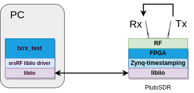

Application Note: Tx-Rx testing with ADALM-PLUTO¶
Overview¶
Hardware and Software Requirements¶
For this application note, the following hardware and software will be used:
Dell XPS13 with Ubuntu 20.04.4
USRP B200 mini
ADALM-PLUTO SDR with custom SRS bitstream
srsRAN
SRS Zynq timestamping
Analog Devices libiio and libad9361 software libraries
(Optional) Python-3 Numpy and Matplotlib
Prerequisites¶
1. You need to generate the custom SRS timestamp bitstream and to load it in the board (see the ADALM-PLUTO project build section for more details).
Install srsRAN dependencies:
sudo apt-get install build-essential cmake libfftw3-dev libmbedtls-dev libboost-program-options-dev libconfig++-dev libsctp-dev
3. Install the libiio software library (see Analog Devices libiio wiki and libad9361-iio repository for the full instructions).
4. (Optional) Install Python Numpy and Matplotlib if you want to be able to get a plot of the data capture generated as a result of the Tx-Rx test:
sudo pip3 install -U pip
sudo pip3 install numpy matplotlib
Building and configuring srsRAN¶
1. Execute the initialization script. It will compile the srsRAN stack as well as the RF drivers utilized by the Zynq timestamping solution.
git clone https://github.com/srsran/zynq_timestamping.git --recursive
cd app
./prepare.sh
NOTE: the ADALM-PLUTO SDR bitsream has been built by default to implement an internal buffering stage in the timestamped DAC path supporting storage of up to 4x 2000 sample-packets coming from the CPU - that is, according to values set for the CONFIG.PARAM_BUFFER_LENGTH and CONFIG.PARAM_MAX_DMA_PACKET_LENGTH parameters of the dac_fifo_timestamp_enabler block in the board’s system.tcl script, which enables storing 4 ms worth of signal for 1.4 MHz BW (i.e., 1920 samples per subframe). This s aligned with the default RF IIO driver implementation, which sets the actual DMA packet exchange to a fixed size of 1920 samples.
Running¶
First of all, you need to make sure that the ADALM-PLUTO board is set up to implement a Tx-Rx loopback (e.g., cable the Tx and Rx ports together).
A customized txrx application (aimed at demonstrating the basic capabilities of the Zynq timestamping solution) has been compiled in the previous step. It will transmit three tones with a separation of 4 ms between them, while generating a capture file signal as well. A script is also provided to execute it:
cd scripts
./run_txrx_plutosdr.sh
Note that all the scripts located under ‘/app/scripts’ are meant to help the user understand how to use the test applications and which parameters need to be provided.
(Optional) You can plot the data capture generated during the execution of the previous script with the following command:
python3 show.py test_txrx_pluto.bin